STAM 102 :: Lecture 09 :: Use of in-built functions and writing expressions

In-built Functions
- A function is an in-built program, which is used to do a particular task.
- Functions take the input the input and will give the result as the output.
- Based on the input and output data the functions are categorized as
- String functions
- Arithmetic functions
- Date functions
- Logical functions
- Group functions
Use of in-built function SUM()
To use in-built functions enter the data to prepare mark list of the I- B.Sc.(Agriculture) students in the spreadsheet.
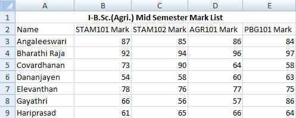
- Using the in-built function SUM() we can calculate the total scored by each and every student in I-B. Sc. (Agri.).
- Add Total column in the spreadsheet as shown below:
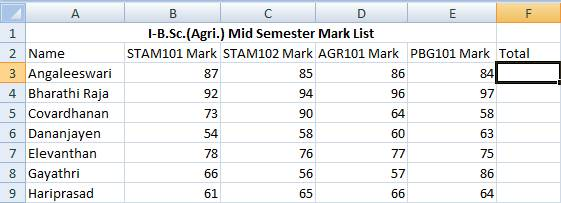
- Place the mouse pointer in the cell with the address F3
- The F3 cell is the one which should display the total mark scored by the student namely Angaleeswari in the above example.
- Click on Insert Menu à Function
- or Select fx in the Formula bar
- Insert Function dialog box will get displayed as shown below:
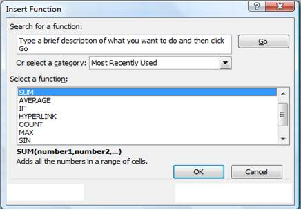
- Select SUM function and click OK button in the Insert Function dialog box.
- The function Argument dialog box will be displayed with the automatically assumed range of cells to be added(B3 to E3)
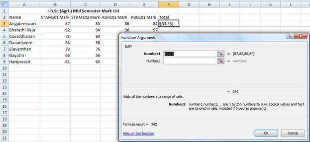
- Click OK. The result is displayed as shown. We can even choose the range of cells added manually.
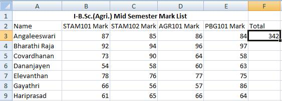
- The total marks scored by the other students have to added in the same way by making use of the SUM() function.
- Instead entering the same function for all the students in the example we can copy the formula to the cells in the total column to add B4:E4, B5:E5, B6:E6 and so on.
- When we copy the SUM() function formula from the cell F3 to F4 the SUM function will automatically taking the input range of numbers to be added is B4:E4.
- The same is applicable to the rest of the cells in the total column.
- To copy down the formula place the mouse pointer at the bottom right corner of the cell F3.
- The mouse pointer now automatically changes into + symbol.
- Now drag + symbol down the cells in the Total column.
- We can see the total marks of all the students in the example as shown below.
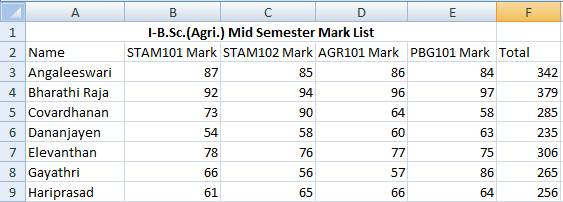
Use of in-built function AVERAGE()
- To calculate the average marks scored by the students in the example we can make use of average function AVERAGE().
- Enter Average column in the spreadsheet.
- Place the mouse pointer in the cell with the address G3
- The F3 cell is the one which should display the total mark scored by the student namely Angaleeswari in the above example.
- Click on Insert Menu à Function
- or Select fx in the Formula bar
- Insert Function dialog box will get displayed as shown below. Choose AVERAGE() function and click OK.
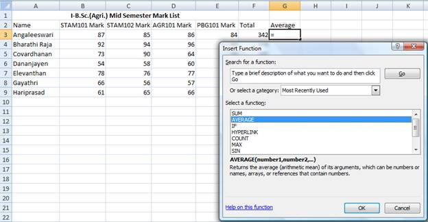
- Click OK button in the Insert Function dialog box.
- In the Function Argument dialog box enter F3/4 then click OK button. The average scored is displayed.
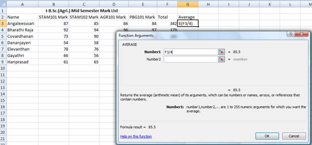
- Copy the AVERAGE formula as we copied the SUM().
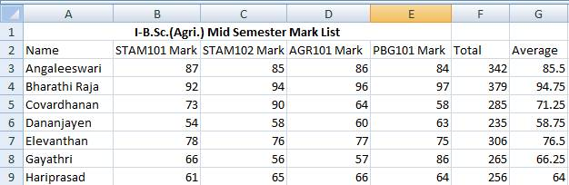
Writing Expressions
- The total marks can be calculated by writing expressions.
- Place the cursor the cell F3.
- To enter expression, enter the equal sign first.
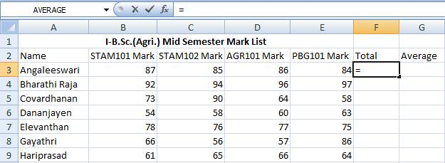
- Choose the cells with the cursor as sown
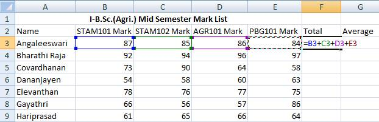
- Press enter. The result will be displayed in F3. Copy the expression down the Total column to find the total mark scored by all the students in the example.
- To calculate the averages place the G3.
- Enter the equal sign first in the cell G3.
- Enter F3/4 which is the average to be calculated.
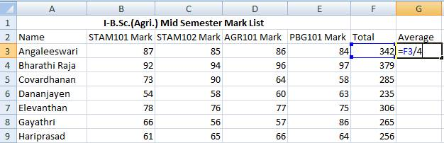
- Press enter. The average will be displayed. Copy the expression down the cells in the Average column to calculate the rest of the averages.
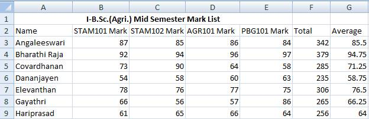
| Download this lecture as PDF here |